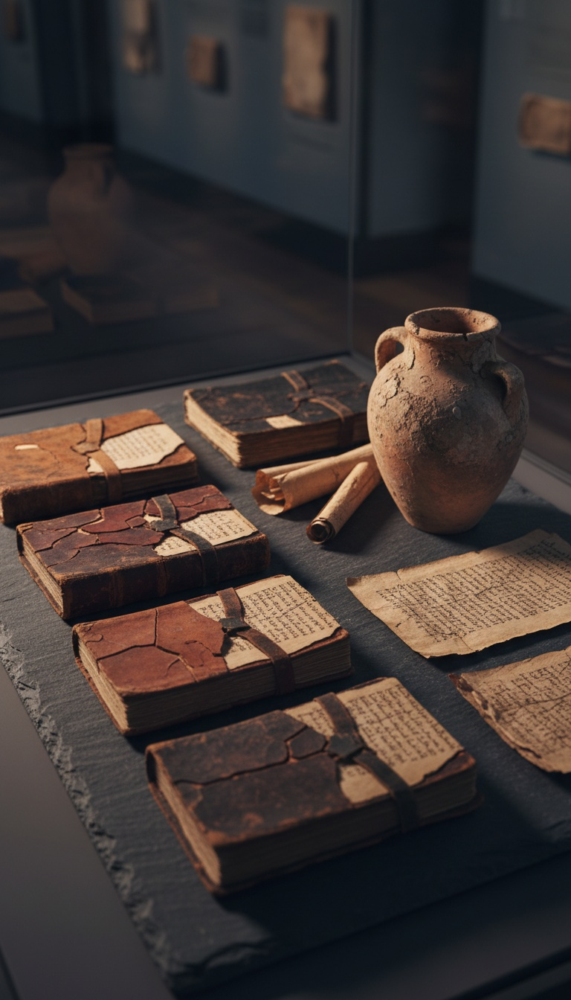

The Bible on your shelf is missing books. Not lost in a fire. Not misplaced in a desert. Removed by name, by vote, by men who signed their signatures to the deletion.
Seven of those texts were read aloud in first century congregations, quoted by New Testament authors, and buried in caves that Bedouin shepherds cracked open in 1947. This is the receipt trail.

1. The Book of Enoch: Quoted by Jude, Cut by Athanasius
The Book of Enoch is directly quoted in the New Testament epistle of Jude, verses 14 and 15. That is not interpretation. That is the canonical text citing a book your Bible does not contain.
Eleven Aramaic fragments of Enoch were recovered from Qumran Cave 4 between 1947 and 1956. They now sit in the Israel Museum's Shrine of the Book in Jerusalem, catalogued as 4Q201 through 4Q212. Carbon dating places them between 200 BCE and 68 CE.
Athanasius of Alexandria, in his 39th Festal Letter dated 367 CE, listed the 27 books of the New Testament and explicitly excluded Enoch. The Ethiopian Orthodox Tewahedo Church ignored him. Enoch remains in their canon to this day, printed in Ge'ez in the Bible sold in Addis Ababa.
2. The Gospel of Thomas: 114 Sayings Buried for 1,600 Years
In December 1945, an Egyptian farmer named Muhammad Ali al-Samman was digging for fertilizer near the cliffs of Jabal al-Tarif, outside Nag Hammadi. He struck a sealed clay jar. Inside were thirteen leather-bound codices.
Codex II contained the Gospel of Thomas. One hundred fourteen sayings attributed directly to Jesus, with no crucifixion narrative, no resurrection, no institutional church. The manuscript is now housed at the Coptic Museum in Cairo, inventory number 10544.
Bishop Cyril of Jerusalem condemned Thomas by name in his Catechetical Lectures, delivered around 350 CE. Within twenty years, monks at the nearby Pachomian monastery of Chenoboskion hid their copy in that jar rather than destroy it. They knew what was coming.
3. The Book of Jubilees: Still Scripture in Ethiopia
Jubilees rewrites Genesis and Exodus with additional detail about the Watchers, the calendar, and the giants. Fifteen separate copies were identified among the Dead Sea Scrolls, more than most books that made the final cut.
The Council of Trent in 1546 formally excluded Jubilees from the Roman Catholic canon. The Ethiopian church again ignored the ruling. Jubilees, called Kufale in Ge'ez, remains printed between Genesis and the historical books in the Ethiopian Bible.
James VanderKam, the University of Notre Dame scholar who published the definitive 1989 critical edition, dates the composition to roughly 160 BCE. That is older than Esther. Esther made the canon. Jubilees did not.
4. The Gospel of Mary: The Woman Written Out
The Berlin Codex, catalogued as Papyrus Berolinensis 8502, was purchased in Cairo in 1896 by German scholar Carl Reinhardt. It sat in the Egyptian Museum of Berlin for over fifty years before its contents were fully published.
Inside was the Gospel of Mary, in which Mary Magdalene receives private teachings from Jesus and is challenged by Peter for it. The text is dated to the second century. Only six of its original pages survive.
Athanasius did not lose these books. He listed them, named them, and ordered them destroyed. The monks at Nag Hammadi buried the jar in 367 CE. That date is not a coincidence. It is the same year the Festal Letter arrived in Egypt.
5. The Gospel of Philip: Sealed in Codex II
The Gospel of Philip was found in the same Nag Hammadi jar as Thomas. It contains the passage about Jesus and Mary Magdalene that Dan Brown built a career on, but the actual text is more damning than the novel.
Philip discusses sacraments the later church would monopolize. Bridal chamber. Anointing. Redemption. The manuscript is dated by paleography to around 350 CE, and the underlying composition to the mid second century. It sits beside Thomas in Cairo, Codex II, tractate 3.
6. The Shepherd of Hermas: In the Oldest Bible We Have
The Codex Sinaiticus, discovered by Constantin von Tischendorf at Saint Catherine's Monastery on Mount Sinai in 1859, is the oldest complete New Testament in existence. It is dated to roughly 340 CE and now lives in four locations: the British Library, Leipzig University, the National Library of Russia, and Saint Catherine's itself.
Bound inside that Bible, between Revelation and the end, are two books your Bible does not contain. The Epistle of Barnabas and the Shepherd of Hermas. They were scripture in 340 CE. They were removed later.
Irenaeus, Clement of Alexandria, and Origen all cited Hermas as scripture. The Muratorian Fragment, dated to 170 CE, discusses whether to include it. The fact that the argument existed is the receipt. It was in the running.
7. The Apocalypse of Peter: The Original Hell
The Apocalypse of Peter contains the earliest detailed Christian description of hell, punishment by punishment, sin by sin. A Greek fragment was excavated at Akhmim, Egypt in the winter of 1886 to 1887 by the French Archaeological Mission and is now held at the Egyptian Museum in Cairo.
The same Muratorian Fragment that debated Hermas listed the Apocalypse of Peter as accepted scripture, with a note that some refused to read it in church. Bishop Sozomen, writing around 440 CE, records that it was still read annually on Good Friday in Palestinian churches in his lifetime.
Then it vanished. Dante's Inferno borrowed its architecture. The councils erased its name.
Seven books. Three museums. One festal letter in 367 CE that drew the line and told monks in the Egyptian desert which pages to burn. They buried the jar instead. That jar was cracked open in 1945 by a farmer looking for fertilizer.
The Forbidden Seven, our free PDF, lays out all seven texts side by side with the passages the councils did not want read aloud. The Hidden Canon, our 200 page investigation, prints the receipts in full. Links in bio.
The books survived the fire, the councils, and 1,600 years underground. The only question left is whether you open the file before your church tells you not to.
Before you go
7 books the Vatican doesn't want you reading. Free PDF — the texts they cut, with sources. Joined by 140+ Inner Circle members.
No spam. Unsubscribe anytime.
Go deeper
The Hidden Canon, Vol. I — Enoch. Jubilees. Thomas. Mary. Judas. 90 pages, 14 chapters, every receipt cited. The books your Bible quietly removed.
Read the Canon →Books that informed this investigation
As an Amazon Associate, Hidden Epoch earns from qualifying purchases. Cost to you: nothing.
Research safely
The VPN we use to research without being tracked. First 3 months free.
Get NordVPN →